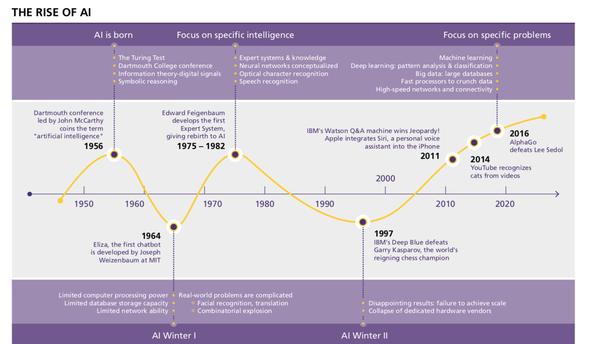

History of Artificial Intelligence
Links:

Artificial intelligence is a young discipline of sixty years, which is a set of sciences, theories and techniques including mathematical logic, statistics, probabilities, computational neurobiology, computer science that aims to imitate the cognitive abilities of a human being. Initiated in the breath of the Second World War, its developments are intimately linked to those of computing and have led computers to perform increasingly complex tasks, which could previously only be delegated to a human.However, this automation remains far from human intelligence in the strict sense, which makes the name open to criticism by some experts. The ultimate stage of their research (a "strong" AI, i.e. the ability to contextualize very different specialized problems in a totally autonomous way) is absolutely not comparable to current achievements ("weak" or "moderate" AIs, extremely efficient in their training field). The "strong" AI, which has only yet materialized in science fiction, would require advances in basic research (not just performance improvements) to be able to model the world as a whole.Since 2010, however, the discipline has experienced a new boom, mainly due to the considerable improvement in the computing power of computers and access to massive quantities of data.
Promises, renewed, and concerns, sometimes fantasized, complicate an objective understanding of the phenomenon. Brief historical reminders can help to situate the discipline and inform current debates.
1940/1960:

The period between 1940 and 1960 was strongly marked by the conjunction of technological developments (of which the Second World War was an accelerator) and the desire to understand how to bring together the functioning of machines and organic beings. For Norbert Wiener, a pioneer in cybernetics, the aim was to unify mathematical theory, electronics and automation as "a whole theory of control and communication, both in animals and machines". Just before, a first mathematical and computer model of the biological neuron (formal neuron) had been developed by Warren McCulloch and Walter Pitts as early as 1943.
At the beginning of 1950, John Von Neumann and Alan Turing did not create the term AI but were the founding fathers of the technology behind it: they made the transition from computers to 19th century decimal logic (which thus dealt with values from 0 to 9) and machines to binary logic (which rely on Boolean algebra, dealing with more or less important chains of 0 or 1). The two researchers thus formalized the architecture of our contemporary computers and demonstrated that it was a universal machine, capable of executing what is programmed. Turing, on the other hand, raised the question of the possible intelligence of a machine for the first time in his famous 1950 article "Computing Machinery and Intelligence" and described a "game of imitation", where a human should be able to distinguish in a teletype dialogue whether he is talking to a man or a machine. However controversial this article may be (this "Turing test" does not appear to qualify for many experts), it will often be cited as being at the source of the questioning of the boundary between the human and the machine.
The term "AI" could be attributed to John McCarthy of MIT (Massachusetts Institute of Technology), which Marvin Minsky (Carnegie-Mellon University) defines as "the construction of computer programs that engage in tasks that are currently more satisfactorily performed by human beings because they require high-level mental processes such as: perceptual learning, memory organization and critical reasoning. The summer 1956 conference at Dartmouth College (funded by the Rockefeller Institute) is considered the founder of the discipline. Anecdotally, it is worth noting the great success of what was not a conference but rather a workshop. Only six people, including McCarthy and Minsky, had remained consistently present throughout this work (which relied essentially on developments based on formal logic).
While technology remained fascinating and promising (see, for example, the 1963 article by Reed C. Lawlor, a member of the California Bar, entitled "What Computers Can Do: Analysis and Prediction of Judicial Decisions"), the popularity of technology fell back in the early 1960s. The machines had very little memory, making it difficult to use a computer language. However, there were already some foundations still present today such as the solution trees to solve problems: the IPL, information processing language, had thus made it possible to write as early as 1956 the LTM (logic theorist machine) program which aimed to demonstrate mathematical theorems.
Herbert Simon, economist and sociologist, prophesied in 1957 that the AI would succeed in beating a human at chess in the next 10 years, but the AI then entered a first winter. Simon's vision proved to be right... 30 years later.
1980/1990:
In 1968 Stanley Kubrick directed the film "2001 Space Odyssey" where a computer - HAL 9000 (only one letter away from those of IBM) summarizes in itself the whole sum of ethical questions posed by AI: will it represent a high level of sophistication, a good for humanity or a danger? The impact of the film will naturally not be scientific but it will contribute to popularize the theme, just as the science fiction author Philip K. Dick, who will never cease to wonder if, one day, the machines will experience emotions.
It was with the advent of the first microprocessors at the end of 1970 that AI took off again and entered the golden age of expert systems.
The path was actually opened at MIT in 1965 with DENDRAL (expert system specialized in molecular chemistry) and at Stanford University in 1972 with MYCIN (system specialized in the diagnosis of blood diseases and prescription drugs). These systems were based on an "inference engine," which was programmed to be a logical mirror of human reasoning. By entering data, the engine provided answers of a high level of expertise.
The promises foresaw a massive development but the craze will fall again at the end of 1980, early 1990. The programming of such knowledge actually required a lot of effort and from 200 to 300 rules, there was a "black box" effect where it was not clear how the machine reasoned. Development and maintenance thus became extremely problematic and - above all - faster and in many other less complex and less expensive ways were possible. It should be recalled that in the 1990s, the term artificial intelligence had almost become taboo and more modest variations had even entered university language, such as "advanced computing".
The success in May 1997 of Deep Blue (IBM's expert system) at the chess game against Garry Kasparov fulfilled Herbert Simon's 1957 prophecy 30 years later but did not support the financing and development of this form of AI. The operation of Deep Blue was based on a systematic brute force algorithm, where all possible moves were evaluated and weighted. The defeat of the human remained very symbolic in the history but Deep Blue had in reality only managed to treat a very limited perimeter (that of the rules of the chess game), very far from the capacity to model the complexity of the world.
1980/1987:
During the 1980s a type of AI program called "master frameworks" was received by enterprises far and wide and information turned into the focal point of standard AI research. In those equivalent years, the Japanese government forcefully subsidized AI with its fifth era PC venture. Another empowering occasion in the mid 1980s was the restoration of connectionism in crafted by John Hopfield and David Rumelhart. By and by, AI had made progress.
1987/1993:
AI winter:
The term "AI winter" was coined by researchers who had survived the funding cuts of 1974 when they became concerned that enthusiasm for expert systems had spiraled out of control and that disappointment would certainly follow. Their fears were well founded: in the late 1980s and early 1990s, AI suffered a series of financial setbacks.The first indication of a change in weather was the sudden collapse of the market for specialized AI hardware in 1987. Desktop computers from Apple and IBM had been steadily gaining speed and power and in 1987 they became more powerful than the more expensive Lisp machines made by Symbolics and others. There was no longer a good reason to buy them. An entire industry worth half a billion dollars was demolished overnight.Eventually the earliest successful expert systems, such as XCON, proved too expensive to maintain. They were difficult to update, they could not learn, they were brittle they could make grotesque mistakes when given unusual inputs and they fell prey to problems such as the qualification problem that had been identified years earlier. Expert systems proved useful, but only in a few special contexts.In the late 1980s, the Strategic Computing Initiative cut funding to AI "deeply and brutally." New leadership at DARPA had decided that AI was not "the next wave" and directed funds towards projects that seemed more likely to produce immediate results.By 1991, the impressive list of goals penned in 1981 for Japan's Fifth Generation Project had not been met. Indeed, some of them, like "carry on a casual conversation" had not been met by 2010. As with other AI projects, expectations had run much higher than what was actually possible.Over 300 AI companies had shutdown, gone bankrupt, or been acquired by the end of 1993, effectively ending the first commercial wave of AI.
1993/2011:
The field of AI, presently in excess of 50 years old, at long last accomplished a portion of its most seasoned objectives. It started to be utilized effectively all through the innovation business, albeit fairly in the background. A portion of the achievement was because of expanding PC force and a few was accomplished by concentrating on explicit disengaged issues and seeking after them with the best expectations of logical responsibility. In any case, the notoriety of AI, in the business world at any rate, was not exactly flawless. Inside the field there was little concession to the purposes behind AI's inability to satisfy the fantasy of human level knowledge that had caught the creative mind of the world during the 1960s. Together, every one of these components assisted with dividing AI into contending subfields concentrated on specific issues or approaches, here and there considerably under new names that hidden the discolored family of "computerized reasoning". Computer based intelligence was both more careful and more effective than it had ever been.On 11 May 1997, Deep Blue became the first computer chess-playing system to beat a reigning world chess champion, Garry Kasparov. The super computer was a specialized version of a framework produced by IBM, and was capable of processing twice as many moves per second as it had during the first match reportedly 200,000,000 moves per second. The event was broadcast live over the internet and received over 74 million hits.In 2005, a Stanford robot won the DARPA Grand Challenge by driving autonomously for 131 miles along an unrehearsed desert trail.Two years later, a team from CMU won the DARPA Urban Challenge by autonomously navigating 55 miles in an Urban environment while adhering to traffic hazards and all traffic laws. In February 2011, in a Jeopardy! quiz show exhibition match, IBM's question answering system, Watson, defeated the two greatest Jeopardy! champions, Brad Rutter and Ken Jennings, by a significant margin.These successes were not due to some revolutionary new paradigm, but mostly on the tedious application of engineering skill and on the tremendous increase in the speed and capacity of computer by the 90s.[156] In fact, Deep Blue's computer was 10 million times faster than the Ferranti Mark 1 that Christopher Strachey taught to play chess in 1951. This dramatic increase is measured by Moore's law, which predicts that the speed and memory capacity of computers doubles every two years, as a result of metal–oxide–semiconductor (MOS) transistor counts doubling every two years. The fundamental problem of "raw computer power" was slowly being overcome.A new paradigm called "intelligent agents" became widely accepted during the 1990s. Although earlier researchers had proposed modular "divide and conquer" approaches to AI,the intelligent agent did not reach its modern form until Judea Pearl, Allen Newell, Leslie P. Kaelbling, and others brought concepts from decision theory and economics into the study of AI. When the economist's definition of a rational agent was married to computer science's definition of an object or module, the intelligent agent paradigm was complete.
An intelligent agent is a system that perceives its environment and takes actions which maximize its chances of success. By this definition, simple programs that solve specific problems are "intelligent agents" as are human beings and organizations of human beings, such as firms. The intelligent agent paradigm defines AI research as "the study of intelligent agents". This is a generalization of some earlier definitions of AI: it goes beyond studying human intelligence; it studies all kinds of intelligence.The paradigm gave researchers license to study isolated problems and find solutions that were both verifiable and useful. It provided a common language to describe problems and share their solutions with each other, and with other fields that also used concepts of abstract agents, like economics and control theory. It was hoped that a complete agent architecture would one day allow researchers to build more versatile and intelligent systems out of interacting intelligent agents.Computer based intelligence scientists started to create and utilize refined scientific apparatuses more than they at any point had in the past.There was an across the board acknowledgment that a considerable lot of the issues that AI expected to settle were at that point being taken a shot at by specialists in fields like arithmetic, financial matters or tasks research. The common numerical language permitted both a more elevated level of coordinated effort with progressively settled and effective fields and the accomplishment of results which were quantifiable and provable; AI had become an increasingly thorough "logical" discipline. Russell and Norvig (2003) portray this as nothing not exactly an "insurgency" and "the triumph of the neats".Judea Pearl's powerful 1988 book brought likelihood and choice hypothesis into AI. Among the numerous new instruments being used were Bayesian systems, shrouded Markov models, data hypothesis, stochastic demonstrating and old style advancement. Exact scientific depictions were additionally created for "computational insight" ideal models like neural systems and developmental calculations.Calculations initially created by AI specialists started to show up as parts of bigger frameworks. Simulated intelligence had tackled a ton of extremely troublesome problemsand their answers end up being valuable all through the innovation business, for example, information mining, mechanical apply autonomy, coordinations, discourse recognition,banking programming, clinical finding and Google's pursuit engine.The field of AI got almost no credit for these triumphs during the 1990s and mid 2000s. Huge numbers of AI's most noteworthy developments have been decreased to the status of simply one more thing in the instrument chest of software engineering. Scratch Bostrom clarifies A great deal of bleeding edge AI has separated into general applications frequently without being called AI on the grounds that once something gets helpful enough and normal enough it's not named AI anymore.Many scientists in AI in 1990s intentionally called their work by different names, for example, informatics, information based frameworks psychological frameworks or computational insight. To some extent, this might be on the grounds that they believed their field to be generally unique in relation to AI, yet in addition the new names help to secure financing. In the business world in any event, the bombed guarantees of the AI Winter kept on frequenting AI examination into the 2000s, as the New York Times announced in 2005: Computer researchers and programming engineers maintained a strategic distance from the term man-made consciousness because of a paranoid fear of being seen as wild-peered toward visionaries.
2011/now:
Deep learning is a branch of machine learning that models high level abstractions in data by using a deep graph with many processing layers. According to the Universal approximation theorem, deep-ness isn't necessary for a neural network to be able to approximate arbitrary continuous functions. Even so, there are many problems that are common to shallow networks that deep networks help avoid. As such, deep neural networks are able to realistically generate much more complex models as compared to their shallow counterparts.
However, deep learning has problems of its own. A common problem for recurrent neural networks is the vanishing gradient problem, which is where gradients passed between layers gradually shrink and literally disappear as they are rounded off to zero. There have been many methods developed to approach this problem, such as Long short-term memory units.
State-of-the-art deep neural network architectures can sometimes even rival human accuracy in fields like computer vision, specifically on things like the MNIST database, and traffic sign recognition.
Language processing engines powered by smart search engines can easily beat humans at answering general trivia questions and recent developments in deep learning have produced astounding results in competing with humans, in things like Go and Doom.Large information alludes to an assortment of information that can't be caught, overseen, and handled by customary programming apparatuses inside a specific time period. It is a huge measure of dynamic, understanding, and procedure streamlining capacities that require new handling models. In the Big Data Era composed by Victor Meyer Schonberg and Kenneth Cooke, enormous information implies that rather than arbitrary examination all information is utilized for investigation. The 5V attributes of enormous information Volume, Velocity, Variety, Value, Veracity. The key centrality of enormous information innovation isn't to ace immense information data, yet to have practical experience in these important information. At the end of the day, if large information is compared to an industry, the way to acknowledging benefit in this industry is to build the Process ability of the information and understand the Value included of the information through Processing.Man-made reasoning is a part of software engineering that endeavors to comprehend the substance of knowledge and produce another wise machine that reacts in a way like human insight. Exploration around there incorporates apply autonomy, discourse acknowledgment, picture acknowledgment, Natural language preparing and master frameworks. Since the introduction of computerized reasoning, the hypothesis and innovation have become increasingly full grown, and the application fields have been extending. It is possible that the mechanical items brought by computerized reasoning later on will be the "compartment" of human intelligence. Man-made brainpower can reenact the data procedure of human awareness and thinking. Man-made reasoning isn't human knowledge, yet it tends to resemble human reasoning, and it might surpass human insight. Fake general insight is likewise alluded to as solid AI or full AI or as the capacity of a machine to perform general shrewd activity. Scholarly sources hold "solid AI" to allude to machines fit for encountering cognizance.